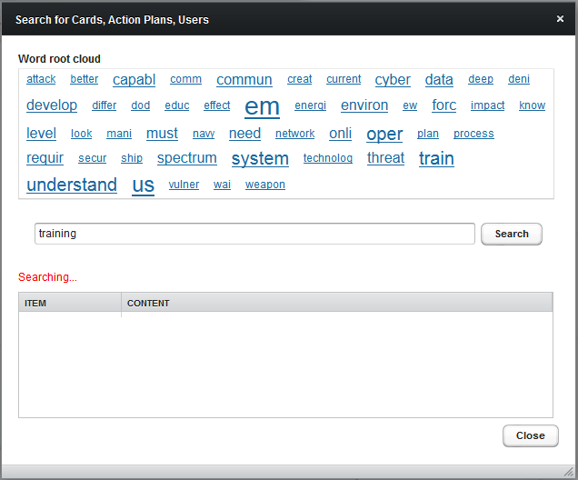
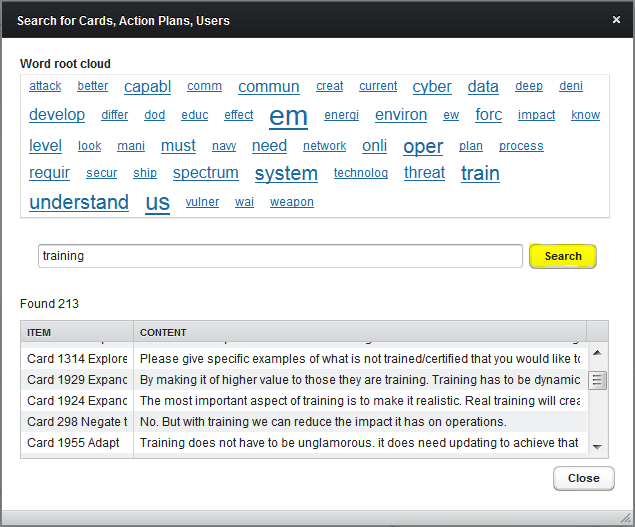
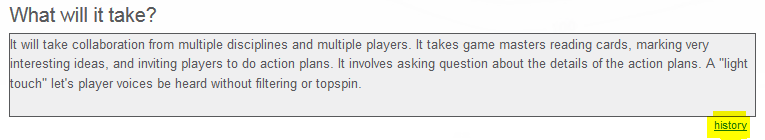
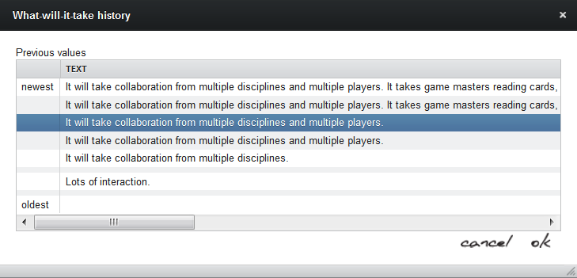

This page describes a variety simple troubleshooting procedures that may help with game play.
If ideas in the game have inspired you to build a great Action Plan with other authors, please fill out an Action Plan Request.
Basics of game play are described by the Frequently Answered Questions (FAQ).
If you don't find a fix shown below that addresses the problem you've encountered, then please ask us to help you by sending us a Trouble Report.
Sending a screen shot image (Windows "Snipping tool") via trouble report email can also help our team to duplicate, diagnose and debug a problem.
If you know that you are having network difficulties, you are also welcome to send a Performance and Playability Report.
This guide contains the following sections:
Sometimes game pages can become locked or inconsistent. Such problems occur when your Web browser has incompletely loaded a game page due to a network interruption. Things you can try:
This can happen for similar causes, usually provoked by incomplete downloads from network timeouts.
If you are still experiencing login cancellation problems, please clear your cache (to reset your local copy of game software) and follow the browser-specific hints below (in the Common Browser Problems section).
Each account in every MMOWGLI game is unique in order to protect player privacy. Usually we limit each player to one player account. (Game masters are guides who get two accounts so they can also Play as a Player.)
After creating a new player account, you must confirm your account via email response. This confirmation prevents someone else from pretending that they might be you, and also verifies your eligibility to play.
Once you are confirmed, please use your player name to log into your MMOWGLI game (not your email address).
If you don't get a confirmation message, or if you still have a problem logging into your game account:
mmowgli@nps.navy.mil
or mmowgli@nps.navy.mil is not or blocked by one of your spam
filters.If instead you are trying to login to the mmowgli portal (where this page appears), please note:
Thanks for all persistence. Play the game, change the game!
In addition to help notes and tips below, here are some additional suggested steps for NMCI users.
We don't have direct access to NMCI systems so any further hints or workarounds are welcome, we will share them here.
Follow the mobile links on the Play page for mobile versions of the games. If instead you use the regular game link on a mobile device, then the active screen you only see is only about 90% wide.
Text interfaces can also accept voice input for game play. You may need to turn on voice recognition in your device (for example, enabling Siri on iPad).
Although originally designed to run on desktop or laptop computer browsers, we are happy to report progress in porting the MMOWGLI interface to mobile devices. Other devices (like mobile phones) can partly work, but your mileage may vary (YMMV). We are considering alternate screen layouts for future handheld support.
As each player learns when creating an account, MMOWGLI provides protections and you have options regarding game-related email.
mmowgli@nps.navy.mil
(or else
mmowgli@nps.edu)
mmowgli-invite@movesInstitute.org
or other game masters
Privacy policy for email
The MMOWGLI game software takes advantage of software designed to run equivalently on all major Web browsers. This usually works well, but some quirks persist. One good workaround for diagnosing or avoiding many problems is to try playing MMOWGLI in a different Web browser.
Here are some issues that we know about. We're always looking at possible improvements. Detailed trouble reports or workaround fixes are welcome.
Inside each MMOWGLI game, many help and information buttons link to this portal. We want them to appear in another browser tab, so that your primary screen of game play is uninterrupted.
Sometimes the popup appears in a separate window, depending on your web-browser settings. Even though the mmowgli game tries to "play well with others," different browsers have different policies and different user preferences regarding popup handling or blocking.
If needed, be sure that your browser allows popups from websites mmowgli.nps.edu and portal.mmowgli.nps.edu so that everything can be displayed. We'll keep working to avoid this annoyance.
Google Chrome Issues
Windows Internet Explorer (IE) 9 and 10 Issues
C:\Program
Files\Internet Explorer\iexplore.exe C:\Program Files
(x86)\Internet Explorer\iexplore.exeSometimes players may see problems in the layout of the web pages. This can be caused by your web browser keeping some old data from the web server while also retrieving some new data. The mix of old and new data in your desktop's web browser results in web page layout problems.
This fix clears almost any problem. You should clear your web browser's cache of old information it may have from the server. Restarting your browser afterwards sometimes helps too.
How this clearing of past data is performed depends on the browser you are using.
When editing the map associated with an Action Plan, a concurrency error has been discovered. Multiple authors simultaneously editing a single Action Plan map won't change prior placemarks, but can interrupt each other. You likely want to use "Talk it over" chat to alert other authors when you are editing the map.
|  |  |
The search feature sometimes misbehaves intermittently. Workaround if the search hangs upon first launch: press the Search button in the popup panel. The problem only seems to occur on larger games when we are running across multiple clusters. Select each of the images at left to view details. |
| Initial freeze, no response | Press Search for results |
|  |
We warn if the size of Action Plan who/what/when/where/why text blocks is greater than 510 characters in each section, and also provide authors with a history of past entries so that they can recover prior ideas if necessary. We also allow somewhat longer (but not endless) entries for player comments on each plan. MMOWGLI should not prevent you from saving longer text blocks. Apologies if you draft a long masterpiece, only to have another author edit the plan and clobber your changes! Check out the history link at the lower-right corner of each text block to see past entries. Selecting a past entry from the history list may show that your prior version is retrievable after all. You may find it most reliable to do your action-plan authoring in a text editor or word processor, then copy/paste your words into the plan. |
|  |
We value your contributions, so thanks for being deliberate. If in doubt: please send a Trouble Report.
We have a number of protective features built into the game architecture. For example, our first step for any data interaction is to "save new data in the database immediately, before anything else." We don't want to lose anyone's thoughtful inputs during a game. You can use this design principle to your advantage when problems occur. For example, Idea Card Chains and Action Plans are typically updated and published hourly as part of each MMOWGLI game. So player data is usually retrievable, even if your browser is currently having difficulty.
Feel free to contact the MMOWGLI design team if you want to discuss further possibilities. MMOWGLI is an open-source platform, and we are considering how to better enable broad sponsorship and software contributions.
As ever: play the game, change the game!